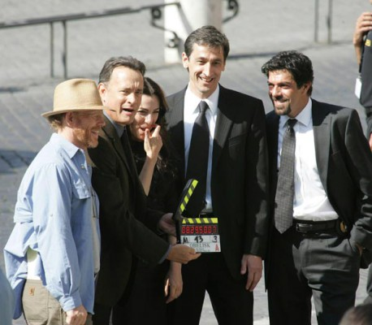
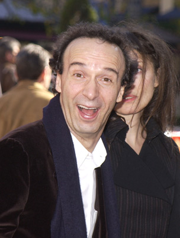

#7071 To Rome with Love

 IMDB-Wertung: 6.3 / 10
IMDB-Wertung: 6.3 / 10  Tomatometer: 45
Tomatometer: 45  Metascore: 0
Metascore: 0 
Der Architekturstudent Jack lebt glücklich verliebt mit seiner Freundin Sally in Rom. Als jedoch Sallys beste Freundin Monica aus den USA zu Besuch kommt, wird die Beziehung des jungen Paares auf die Probe gestellt. Der mit Jack befreundete Stararchitekt John ist einige Tage mit Freunden nach Rom gereist. Er hat mit starken und anstrengenden Frauen Erfahrungen gemacht und warnt den angehenden Architekten vor unüberlegten Taten. Der alternde Opernregisseur Jerry und seine Frau Phyllis sind gerade zu Besuch, um die Familie ihres zukünftigen Schwiegersohnes Michelangelo kennen zu lernen. Leopoldo wird mit einem berühmten Schauspieler verwechselt und über nacht zum Star. Zudem verirrt sich das frischvermählte Paar Antonio und Milly auf dem Weg zu ihren Verwandten im Trubel der Stadt.
Jahr: 2012
Dauer: 111 Minuten
FSK: 0
Land: USA Studio: Sony Pictures ClassicsTonspuren: DTS - ,
Untertitel: Englisch,
Auflösung: 1080p (1920x1040) Größe: 9666 MB
Genre: Komödie, Liebe
Regisseur:  Woody Allen
Woody Allen
Drehbuch: Woody Allen
Soundtrack:
Darsteller:
- Flavio Parenti als Michelangelo
 Alison Pill als Hayley
Alison Pill als Hayley- Alessandro Tiberi als Antonio
- Alessandra Mastronardi als Milly
 Alec Baldwin als John
Alec Baldwin als John- Carol Alt als Carol
-  David Pasquesi als Tim
- Lynn Swanson als Ellen
-  Roberto Benigni als Leopoldo
- Monica Nappo als Sofia
- Fabio Armiliato als Giancarlo
 Woody Allen als Jerry
Woody Allen als Jerry Judy Davis als Phyllis
Judy Davis als Phyllis- Giovanni Esposito als Hotel Clerk
 Jesse Eisenberg als Jack
Jesse Eisenberg als Jack Greta Gerwig als Sally
Greta Gerwig als Sally Penélope Cruz als Anna
Penélope Cruz als Anna- Simona Caparrini als Aunt Giovanna
 Ellen Page als Monica
Ellen Page als Monica Ornella Muti als Pia Fusari
Ornella Muti als Pia Fusari- Antonio Albanese als Luca Salta
 Luca Calvani als Reporter at Movie Premiere
Luca Calvani als Reporter at Movie Premiere- Maricel Álvarez als Reporter at Movie Premiere
- Lino Guanciale als Leonardo
- Fabio Massimo Bonini als Max
- Marina Rocco als Tanya
- Vinicio Marchioni als Aldo Romano
- Donatella Finocchiaro als Reporter on Street
 Riccardo Scamarcio als Hotel Robber
Riccardo Scamarcio als Hotel Robber- Antonino Bruschetta als Hotel Detective
 Giuliano Gemma als Hotel Manager
Giuliano Gemma als Hotel Manager Francesco De Vito als Man in Window
Francesco De Vito als Man in Window- Giada Benedetti als Marcella Frascati , uncredited
- Dominic Comperatore als (uncredited
- Pierluigi Marchionne als Traffic Policeman
- Corrado Fortuna als Rocco
- Margherita Vicario als Claudia
- Rosa Di Brigida als Mariangela
- Maurizio Argentieri als Pilot
- Gabriele Rainone als Gabriele
- Camilla Pacifico als Camilla
- Massimo Ferroni als Leopoldo's Co-worker
- Alessandro Procoli als Leopoldo's Co-worker
- Paolo De Vita als Leopoldo's Co-worker
- Cecilia Capriotti als Serafina
- Duccio Camerini als Friend at Cinema
- Lina Sastri als Friend at Cinema
- Alberto Mangiante als TV Voice
- Ruggero Cara als Pedestrian #1 with Directions
- Maria Rosaria Omaggio als Pedestrian #2 with Directions
Datei: X:\2012(N-Z)\To Rome with Love (2012, FSK0, 1920x1040).mkv seit 21.09.2017
Festplatte: HD 2012(N-Z)-2013(A-H)
 Es gibt insgesamt 138 Filme in der Gruppe '2012(N-Z)'
Es gibt insgesamt 138 Filme in der Gruppe '2012(N-Z)'